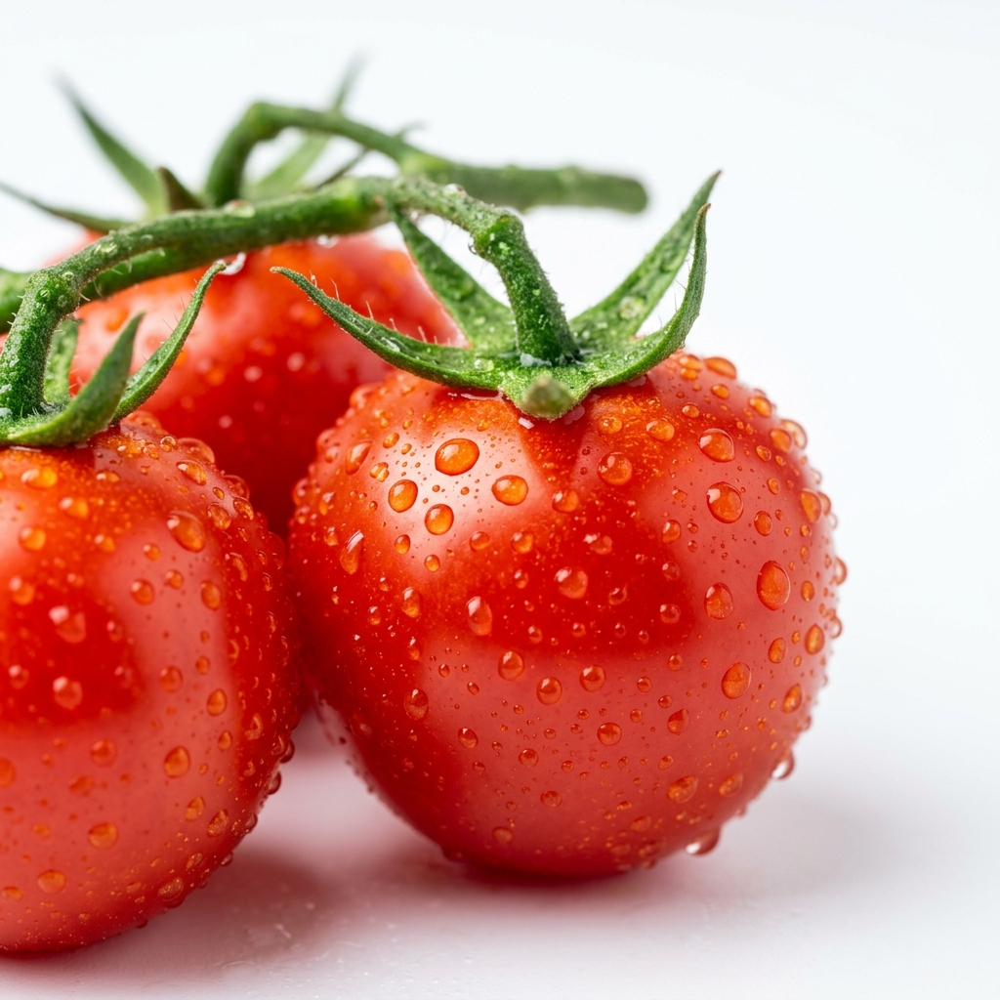
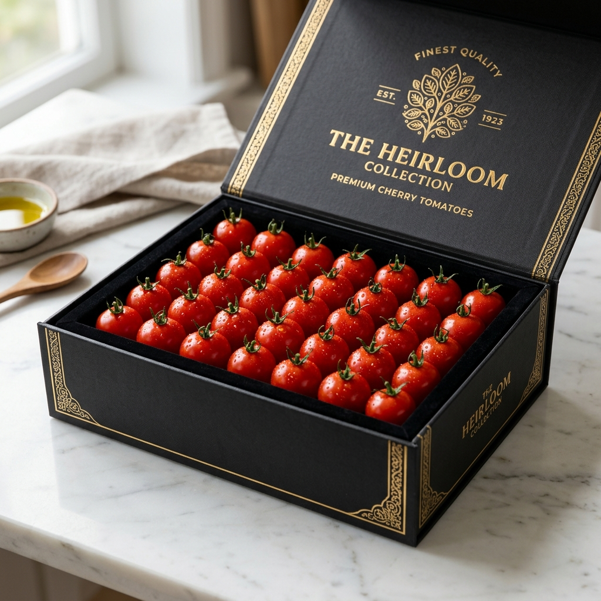

奥松農園は、トマトが本来持つ甘みと旨みを極限まで引き出しています。皮が薄く、口に入れた瞬間に弾ける果汁は、まるで高級フルーツのよう。トマトが苦手なお子様でも「もっと食べたい！」と笑顔になる、そんな感動を宮崎から全国の食卓へお届けします。
奥松農園の3つのこだわり
食の安全や環境保全に取り組む農場の証明であるJGAP認証を取得。大切なお子様にも安心して毎日食べていただける品質を徹底しています。
最新の環境制御システムを導入。温度・湿度から日射量までをデータで精密に管理し、一年中安定して高い糖度と旨みを保ったトマトを育てています。
最も味が乗った瞬間に収穫し、その日のうちに農園から直接発送。店頭に並ぶものとはレベルの違う「採れたてのみずみずしさ」を味わえます。

ご自宅用のお得なパックから、大切な方への贈答用プレミアムボックスまで。奥松農園のオンラインショップにて全国どこからでもご購入いただけます。
商品一覧を見る（ECショップへ）